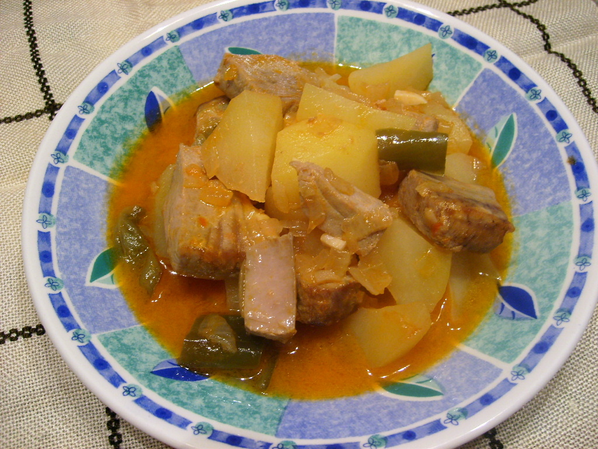

Marmitako

Description
Marmitako is a traditional Basque fisherman's stew that originated in the coastal regions of Northern Spain. This hearty dish combines fresh tuna with potatoes, peppers, and onions in a rich, flavorful broth. Originally cooked by Basque sailors on their boats using a marmita (cooking pot), it's now a beloved comfort food perfect for cold days.
Ingredients
- 2 lbs fresh tuna steaks, cut into large chunks
- 2 lbs potatoes, peeled and cut into chunks
- 2 large onions, sliced
- 2 red bell peppers, cut into strips
- 4 cloves garlic, minced
- 3 ripe tomatoes, grated (discard skins)
- 1 bay leaf
- 1 tsp sweet paprika (pimentón dulce)
- 1/4 cup olive oil
- 4 cups fish stock or water
- Salt and black pepper to taste
- Fresh parsley for garnish
Steps
- Prepare the sofrito: Heat olive oil in a large, heavy-bottomed pot or casserole over medium heat. Add the sliced onions and cook for 5 minutes until softened.
- Add peppers and garlic: Add the red pepper strips and minced garlic. Cook for another 5 minutes, stirring occasionally.
- Add tomatoes and spices: Add the grated tomatoes, bay leaf, and paprika. Cook for 5-8 minutes until the tomatoes break down and create a thick base.
- Add potatoes: Add the potato chunks to the pot and stir gently to coat with the sofrito. Season with salt and pepper.
- Add liquid: Pour in the fish stock or water until it just covers the potatoes. Bring to a boil, then reduce heat and simmer for 15-20 minutes.
- Check potatoes: Test the potatoes with a fork - they should be almost tender but still hold their shape.
- Add tuna: Gently add the tuna chunks to the pot. Do not stir too much to avoid breaking the fish. Cook for 8-10 minutes until the tuna is just cooked through.
- Final seasoning: Taste and adjust salt and pepper. Remove the bay leaf.
- Rest and serve: Let the marmitako rest for 5 minutes before serving. Garnish with fresh chopped parsley and serve hot with crusty bread.
Home